When people talk about the UEFA Champions League, they often call it Real Madrid's competition. No club in football history has been as successful in Europe as Real Madrid. They hold the record with 15 UEFA Champions League/European Cup titles, the most by any club.
Real Madrid dominated the early years of the competition, winning the first five European Cups in a row:
|
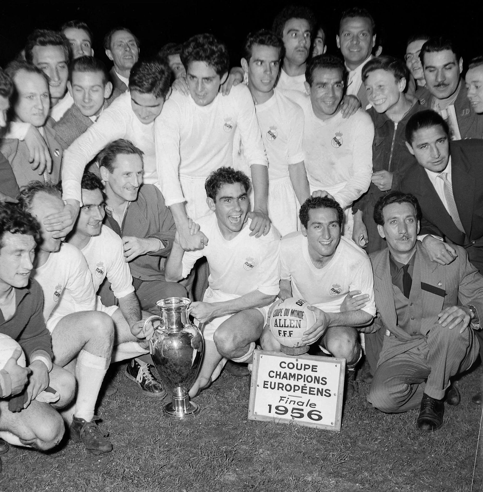 |
|
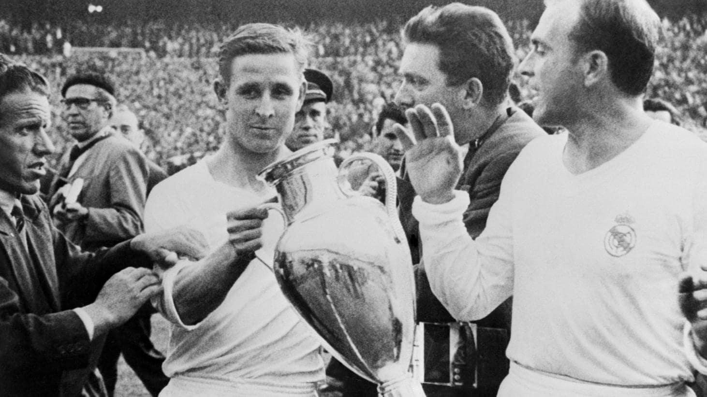 |
|
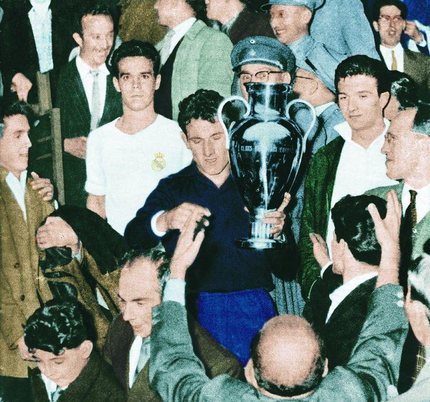 |
|
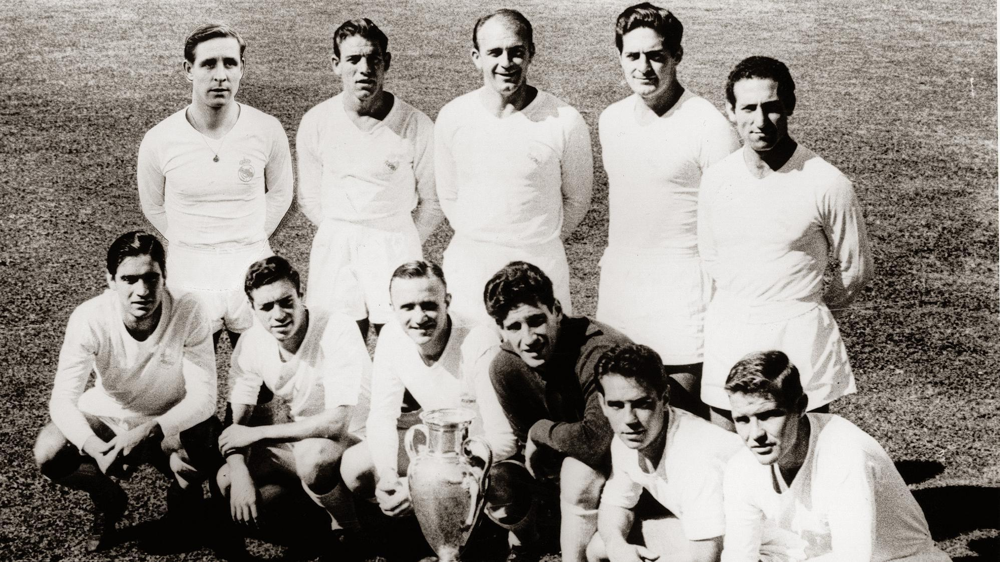 |
|
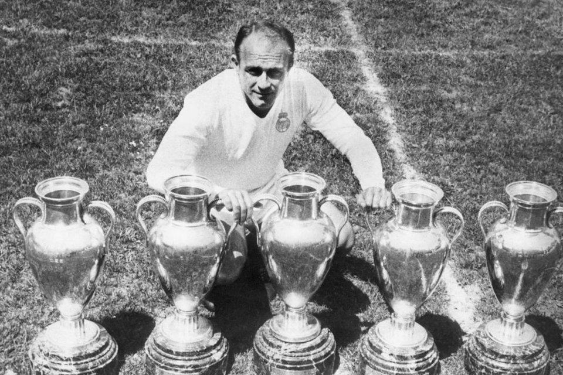 |
|
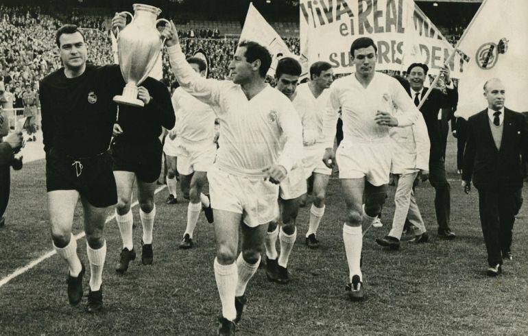
Despite being one of Europe's strongest clubs, Real Madrid went 32 years without winning the European Cup. They reached finals and semifinals but could not lift the trophy again
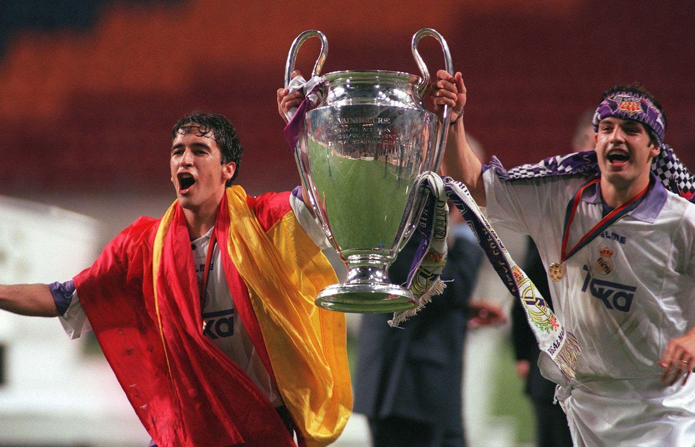
The drought finally ended in 1998 when Real Madrid defeated Juventus 1–0.
This title became known as "La Séptima" (The Seventh).
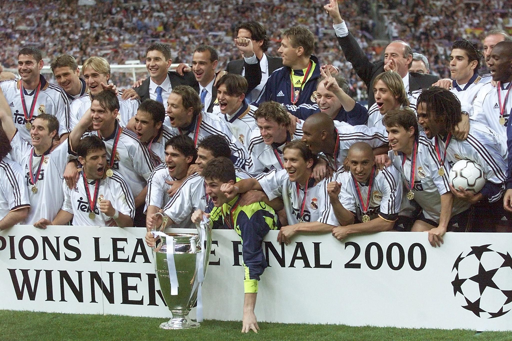
On 24 May 2000, Real Madrid defeated Valencia CF 3–0 in the UEFA Champions League Final at the Stade de France in Paris, winning their 8th European Cup/Champions League title, known as La Octava (The Eighth).
This was the first Champions League final between two clubs from the same country.
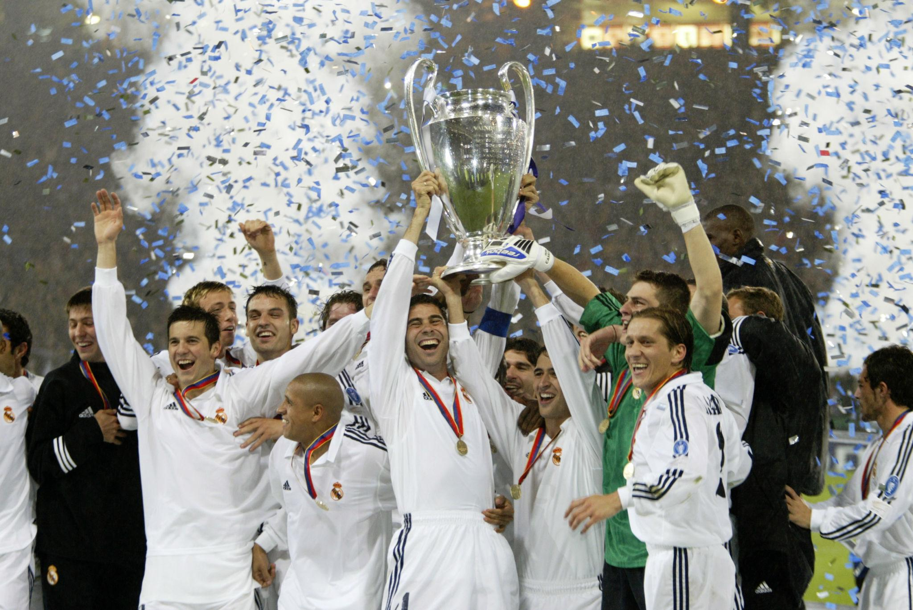
On 15 May 2002, Real Madrid defeated Bayer Leverkusen 2–1 at Hampden Park in Glasgow, Scotland, to win their 9th European Cup/Champions League title, known as La Novena (The Ninth).
This final is remembered for one of the greatest goals in football history: Zinedine Zidane's stunning left-foot volley.

For years Madrid chased their tenth European Cup, known as La Décima.
In the 2014 final against Atlético Madrid, Real Madrid were losing until Sergio Ramos scored a dramatic 93rd-minute equalizer. Madrid eventually won 4–1 after extra time.
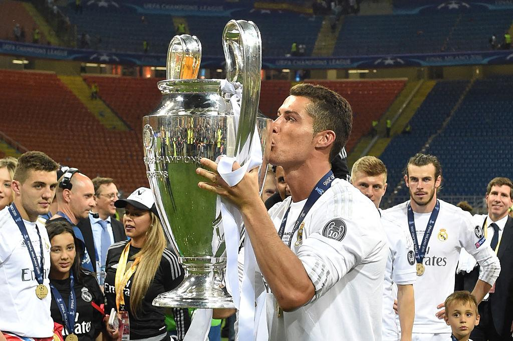
On 28 May 2016, Real Madrid defeated Atlético Madrid 5–3 on penalties after a 1–1 draw (after extra time) at the San Siro Stadium in Milan, winning their 11th European Cup/Champions League title, known as La Undécima (The Eleventh).
This victory marked the beginning of Real Madrid’s historic three-peat era.
They became the first club in the modern Champions League era to win the competition three consecutive times (2016–2018).
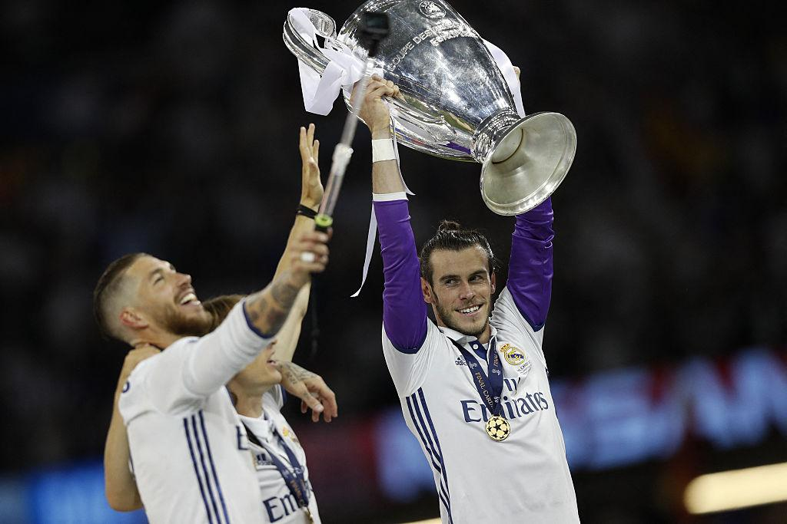
On 3 June 2017, Real Madrid defeated Juventus 4–1 at the Millennium Stadium in Cardiff, Wales, to win their 12th European Cup/Champions League title, known as La Duodécima (The Twelfth).
This victory made Real Madrid the first club in the modern era to successfully defend the Champions League title.
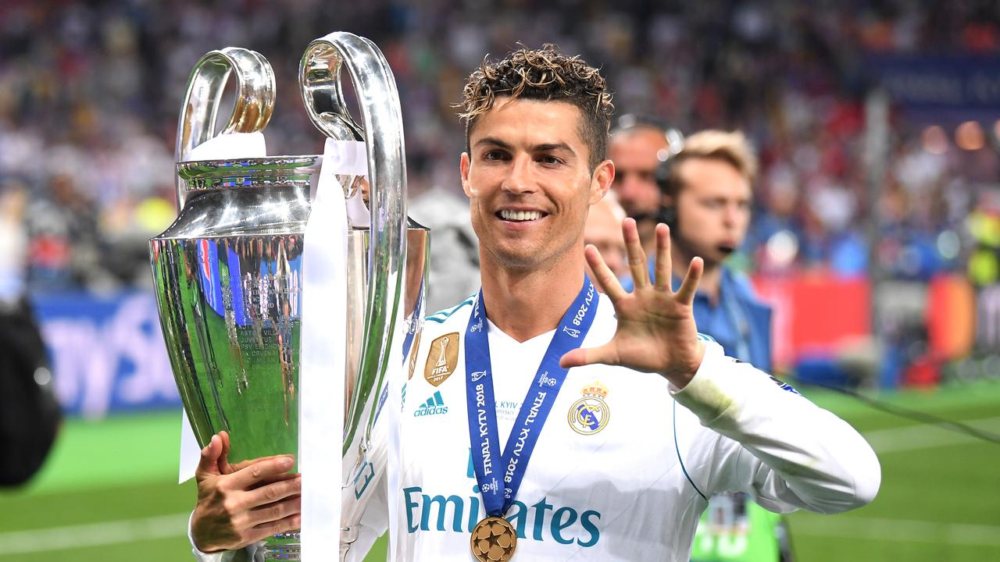
On 26 May 2018, Real Madrid defeated Liverpool 3–1 at the NSC Olimpiyskiy Stadium in Kyiv, Ukraine, winning their 13th European Cup/Champions League title, known as La Decimotercera (The Thirteenth).
This victory completed one of the greatest achievements in modern football: three consecutive Champions League titles (2016, 2017, 2018).
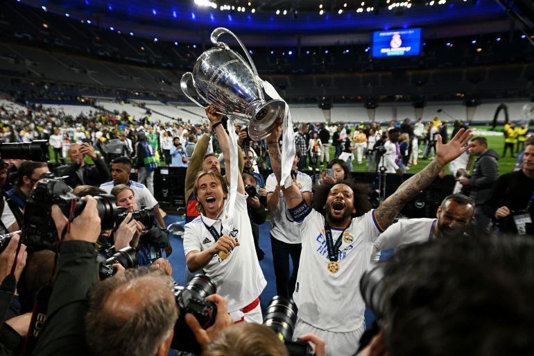
On 28 May 2022, Real Madrid defeated Liverpool 1–0 at the Stade de France in Paris, winning their 14th European Cup/Champions League title, known as La Decimocuarta (The Fourteenth).
This final is remembered for one reason above all: Thibaut Courtois’ legendary performance in goal.
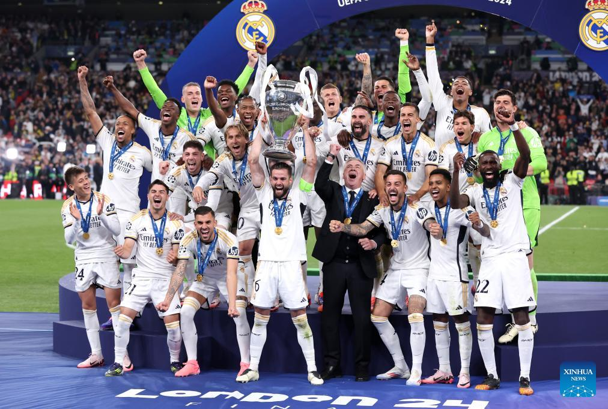
On 1 June 2024, Real Madrid defeated Borussia Dortmund 2–0 at Wembley Stadium in London, winning their 15th European Cup/Champions League title, extending their record as the most successful club in Europe.
This title is especially important because it completed a new era of dominance and added another Champions League trophy at the iconic Wembley Stadium.
Hala Madrid y Nada Más! 🤍 Real Madrid's Champions League history is considered the greatest success story in club football.